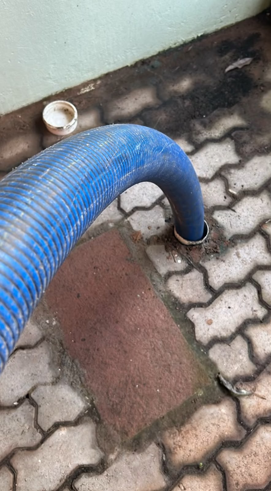

Da pia entupida à limpeza completa de fossa: a JR Desentupidora resolve com equipamento próprio, equipe treinada e orçamento gratuito em Montenegro e região.

Desentupir pia, vaso sanitário, ralos, tanques e canos em geral. Atendemos residências, comércios e indústrias com técnica e equipamento adequados — sem quebrar o que não precisa.
Esgotamento e limpeza de fossa séptica e sumidouro com caminhão a vácuo próprio. Retiramos os efluentes e limpamos o reservatório por completo, evitando mau cheiro e transbordamento.
Limpeza de tubulações com jato de água de alta pressão. Remove gordura acumulada, raízes, incrustações e resíduos que causam entupimentos recorrentes — deixando o encanamento como novo.
Detecção de vazamentos em paredes, pisos ou solo com equipamento eletrônico (geofone). Localizamos o ponto exato sem quebra-quebra desnecessário, economizando tempo e dinheiro.
Sucção de resíduos líquidos e pastosos, caixas de gordura, reservatórios e caixas d'água com equipamento a vácuo. Ideal para manutenção preventiva de comércios e indústrias.
Limpeza e manutenção de sumidouros para garantir o escoamento correto e evitar transbordamentos e mau cheiro. Serviço completo com a estrutura própria da JR.
Descreve o problema pra gente no WhatsApp. Avaliamos e indicamos a melhor solução — com orçamento gratuito.
Falar com a JR